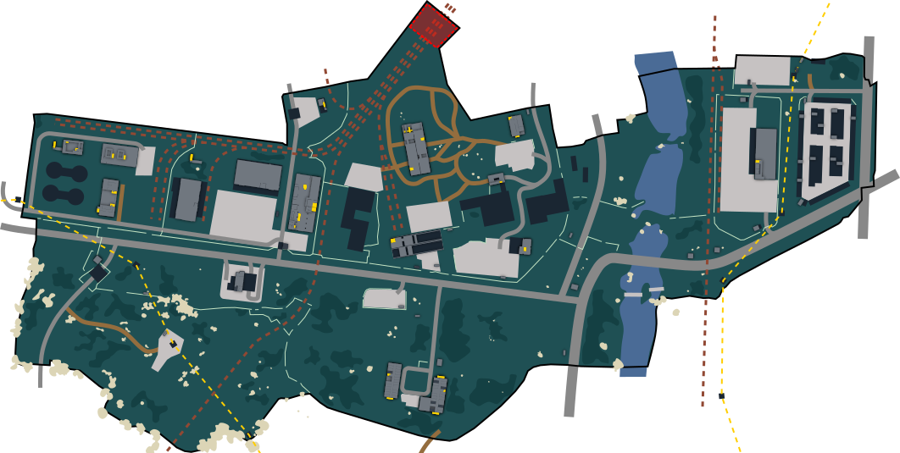
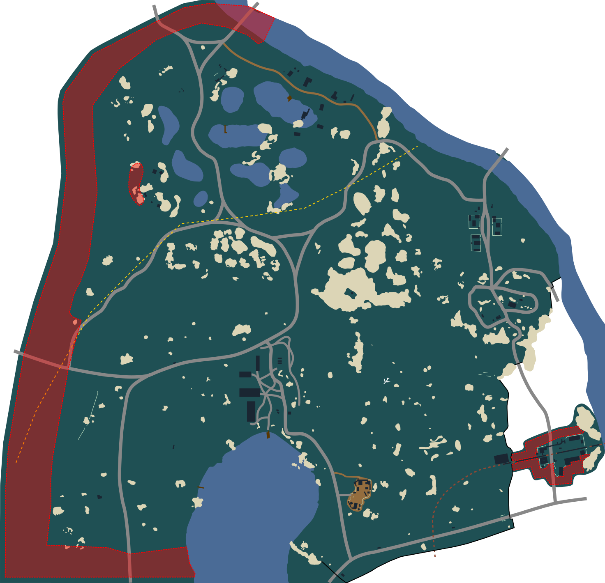
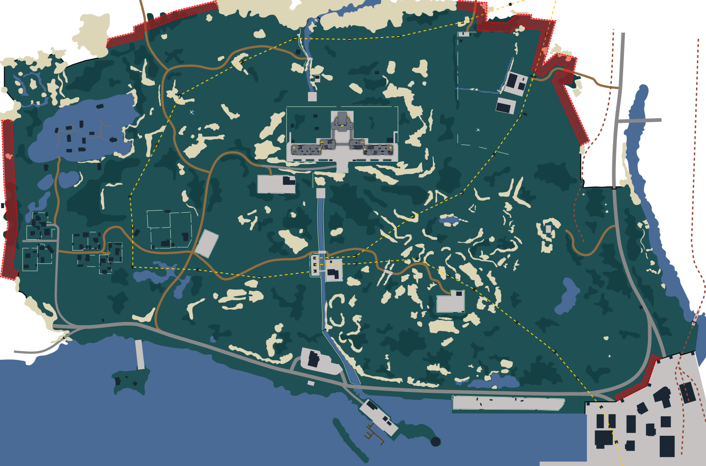
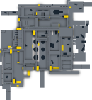
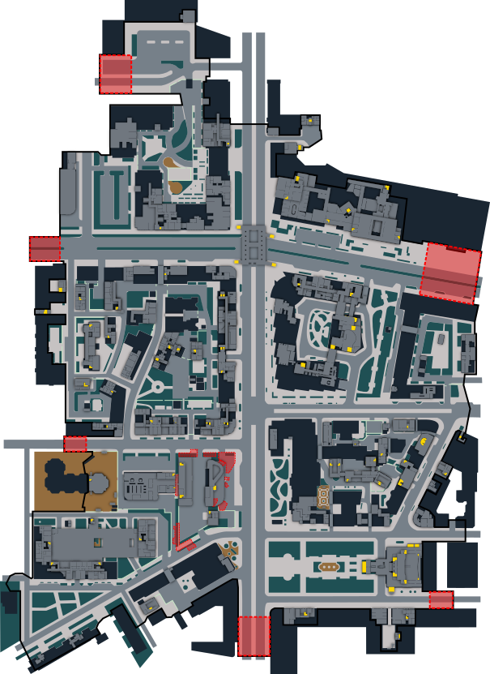
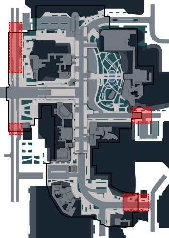
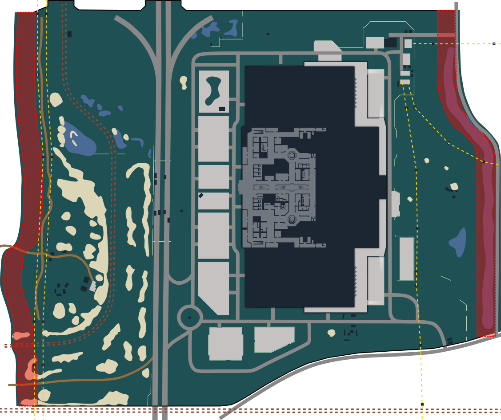
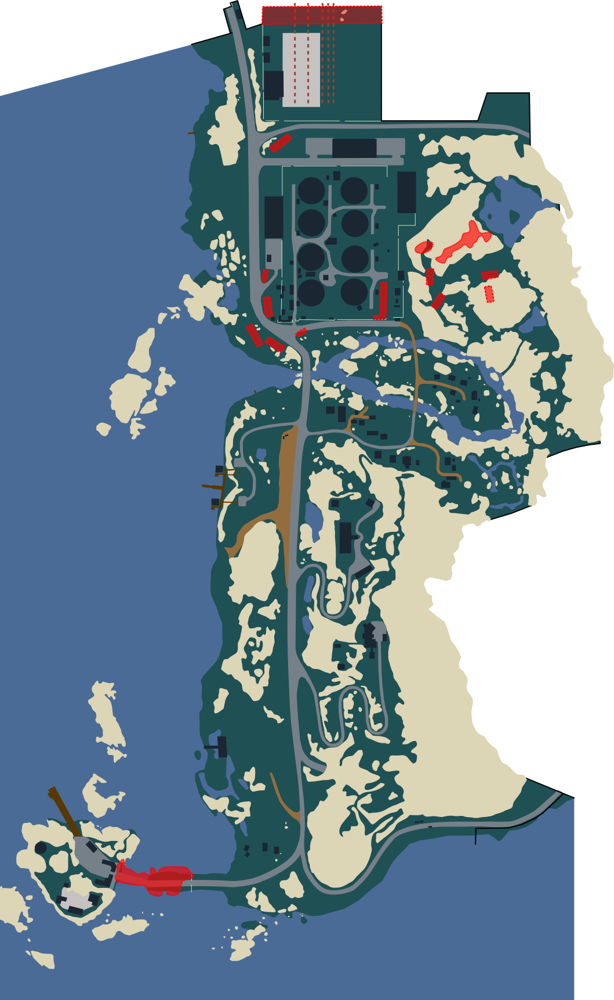
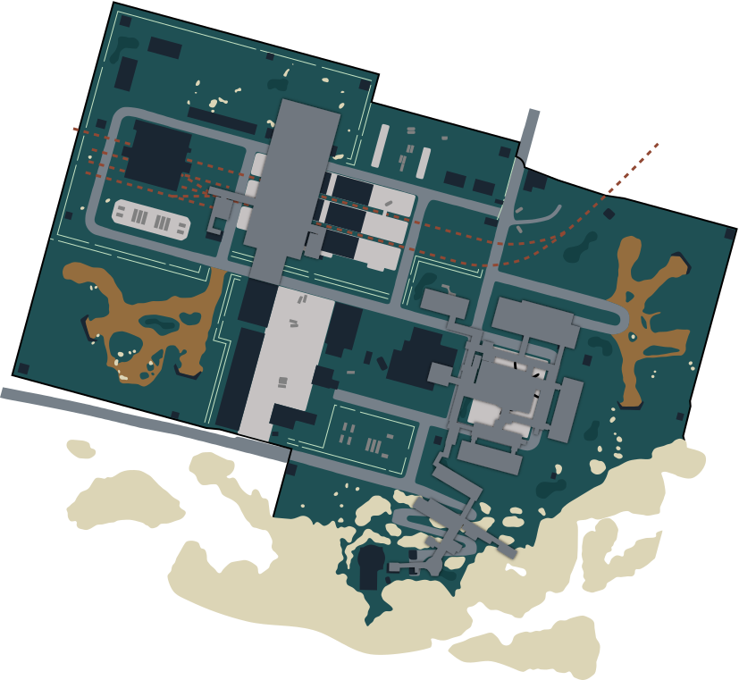

Big RedDormsNew GasOld GasFortressCrackhouseStreamer HouseMain BridgeSniper HillStorageTrailer ParkJunk BridgeRepair ShopSniper RidgeOld ConstructionSkeletonWarehouse 3DepotWarehouse 7Military CheckpointBus StationWarehouse 4Powerline TowerWarehouse 17🖼 wikiのCustoms 脱出セクションを開く(全脱出の写真つき一覧)

SawmillScav TownOld SawmillCultist VillageUSEC CampMilitary CampPondsCrash SiteCheckpointShackLumberCabinsBus StopJaeger's CampSniper RockConvoy🖼 wikiのWoods 脱出セクションを開く(全脱出の写真つき一覧)

ResortPower StationGas StationWeather StationRadio TowerSwampVillageCabinsCottagesTank BridgePierScav IslandBus StopConstructionBunkerCraneScav FarmWest WingEast WingAdmin🖼 wikiのShoreline 脱出セクションを開く(全脱出の写真つき一覧)

Office BuildingMain OfficeBreach RoomLocked OfficeNorth StairsSouth StairsSky BridgeConnectorLocker RoomsSinksHolePlatformServersMed TentSilosHeli CrashPitUnderground StashScav BunkerBlue ContainersWood RoomGlass HallBoilersPumping StationEast HallsForkliftsRafters🖼 wikiのFactory 脱出セクションを開く(全脱出の写真つき一覧)

Primorsky Ave.Primorsky Ave.Primorsky Ave.Kilmov St.Kilmov St.Nikitskaya St.Verhnyaya St.Malevecha St.Chekannaya St.Nizhnyaya St.Razvedchikov St.Zmejskij AlleyKamchatskaya St.Kilmov Shopping MallBelugaCardinal ApartmentsConstructionLexosSparja GroceryCinemaShestyorochkaPinewood HotelTeppakot / KoenerConcordiaCardinal BankLERM ExpoSparja ExpressBurger SpotPost OfficePharmacy 1OfficeCorner RestaurantPharmacy 2Pharmacy 3TarbankSchoolVet ClinicHiveFamily MarketMarked HotelSouth HotelAbandon FactoryDinerPrimorskij 49Prestigio CafeBilbo Coffee北コース南コース🖼 wikiのStreetsOfTarkov 脱出セクションを開く(全脱出の写真つき一覧)
Streetsは脱出が多く位置の個体差も大きい。上記は代表例+目安。必ずOキー2連打で自分のリストを確認。
安全は保証できません。残り時間・銃声・自分の脱出口を優先し、Lexos正面と大通りは避けて建物の裏をつないでください。

TerraGroupSkysideFusionEmpireCapital InsightNakataniElemental GlobalOasisASAP WineryTarbankGAGRIN HotelM ShowroomScience Office🖼 wikiのGroundZero 脱出セクションを開く(全脱出の写真つき一覧)
他にScav側共有の脱出あり。

Power StationGo KartFour CampCargo ContainersWall BreakOli TowerIdea TowerScav CampHighway Construction🖼 wikiのInterchange 脱出セクションを開く(全脱出の写真つき一覧)
他にRailway・Emercom Checkpoint・Saferoom(条件)などあり。位置はOキー2連打で確認。

Train YardDrug LabWater TreatmentPlant 1Plant 2Plant 3PipesGunner NestIslandCabinsCottagesConvenienceRed BrickHillsideBoathousesDead TreeConstructionPikes Peak ResortGrand ChaletTennis CourtLightkeeper IslandCrash Site🖼 wikiのLighthouse 脱出セクションを開く(全脱出の写真つき一覧)
他にSide Tunnel等あり。ローグ地帯(浄水場)を通るルートは注意。

K BuildingsWhite QueenWhite PawnBlack BishopWhite BishopWhite KingBlack KnightWhite KnightWhite RookTrain StationBlack PawnBarracksE1 BunkersE2 Bunkersд - Warehouse BunkersGarageMechanicGas StationShipping YardK1K2K3K4K5K6DomeTarmac🖼 wikiのReserve 脱出セクションを開く(全脱出の写真つき一覧)
D-2は待ち伏せが多い。Armored TrainとHermetic Doorは作動条件を必ず確認。
レベル15前後・トレーダーLL2(Skier LL3未解放)・フリマは一部アイテムのみ購入可、の前提。トレーダー在庫と解放条件はパッチで変わるので、無ければパーツ名でフリマ検索→レベル表記を確認。
5.45x39(AK-74系): 今→ PS(貫通~28・クラス3まで) / 次→ PP(~30前後) / 目標→ BT(~40台・クラス4安定)→BS(最上位・Prapor LL3バーター)。フルオート適性が高くマグのスタック詰め(上に貫通弾)と好相性
7.62x39(AKM/SKS): 今→ PS(貫通~32・序盤最強の安弾) / 目標→ BP(~45前後・高火力貫通)。一発の肉ダメージが重く、タップ撃ちで真価
9x19(MPX/MP5/ピストル): 今→ PST gzh(~20・非装甲/脚用) / 目標→ AP 6.3(~30・ようやく装甲に届く)。装甲相手は脚か顔限定と割り切る
12ゲージ(ショットガン): 今→ フレシェット(~26×8粒・近距離で装甲ごと溶かす) / スラグなら AP-20(~37・単発高貫通)。屋内最強枠
7.62x54R(モシン/SVD): 今→ LPS gzh(~37・ヘルメット貫通ワンパン狙い) / 目標→ SNB(~60台・対重装甲)。頭を狙う武器なので安弾でも仕事する
5.56x45(M4/ADAR/AUG): 今→ M855(~27) / 目標→ M855A1(~40台)→M995(最上位)
.366(VPO系・番外): AP-M(~40台)が「安い銃で高貫通」の抜け道枠。低予算で装甲PMCに対抗したい時の選択肢
原則: 迷ったら「貫通30以上を上に5〜10発+安弾を下に」のスタック詰め。貫通が敵アーマークラス×10を超えてれば概ね抜ける、が目安
構成: AK-74N + RRD-4Cマズル(拾い物・死亡ロスト注意) + M-LOKハンドガード + RK-4フォアグリップ + SAWグリップ + EKP-1S-03サイト + 6L20 30連
弾: 5.45 PS(貫通28)。PP/BT弾が解放され次第マグ上部にスタック積み
運用: 通常レイド用。Prapor保険必須。プリセット登録してロスト時の復旧を楽に
強み: 反動61は9.3万の店売りプリセット(65)より上。この構成が現状の最適解
構成: 素体(店売り42,864 or ≠5バーターのAK-74M) + 純正マズルのまま + SAWグリップ(Mechanic LL2) + Kobra EKP-8-02 ドヴテイル(直付け) + 30連×2
後で追加: GP-25リコイルパッド(Prapor/クエスト解放待ち)、DTK-1(Skier LL3 or フリマ)
運用: スカブ狩り・偵察・危険エリア用の「死んでもいい1本」。①と2本体制で回す
構成: AKM(店売り53,803 or ≠3バーター) + DTK-1(7.62/5.45両対応) + SAWグリップ
弾: 7.62x39 PS(貫通32) — 5.45 PSより硬い相手に強い。トレーダーで安定供給
運用: タップ〜短バースト。BT/PP解放までのメイン候補。反動キツめなので近〜中距離
構成: MP-153ほぼ素のままでOK
弾: 12ゲージ フレシェット — 近距離なら胴撃ちでアーマーごと溶ける
運用: 寮・Factory・屋内CQB向け。近距離のPMC戦と相性◎
構成: モシン(スナイパー)素のまま or PUスコープ
弾: 7.62x54R LPS Gzh — 頭に当てればヘルメット貫通でワンパン
運用: メインロード監視・待ち伏せ。安価な遠距離用として使いやすい
弾: 9x19の安弾は貫通20前後で装甲に無力。高レートで脚を溶かすレグメタ運用専用
運用: 屋内の割り切り運用のみ。基本は③AKMを推奨
「銃より弾」。マガジンは上5〜10発に貫通弾+下に安弾のスタック詰めが基本。良パーツ(RRD-4C等)は消耗品と割り切り、保険は毎レイド必ず。武器はプリセット保存しておくと再構築が一瞬
Salewa×1 + 軍用バンデージ×2 + Esmarch止血帯×2 + スプリント×1 + ゴールデンスター×1 をポーチ/リグに。骨折と重出血を現地で処理できる構成
S(目標): Grizzly — 全状態異常対応の万能。高いのでガチレイド用
A(定番・今の主力): Salewa — 回復量/価格/重出血対応のバランス最良。IFAKは1マスで重出血対応の上位互換枠
B(節約): Car medkit — 激安。重出血を止められない点だけ注意(Esmarch併用)
C: AI-2 — 保険外の緊急用。単体運用は非推奨
軽出血=バンデージ / 重出血=Esmarch・CALOK-B(バンデージ不可) / 骨折=スプリント(アルミスプリントが上位) / 鎮痛=ゴールデンスター(効果時間長くコスパ神。アナルギンは安いが短い) / 黒足で走る前に鎮痛必須
CMS — 黒部位(ゼロHP)を復活させる必需品。Surv12スキル不要のこれを常備。上位のSurv12は回復量ペナルティが少ない高級版
S(キープ/ガチ用): eTG-change(継続回復)、Zagustin(重出血予防)、アドレナリン(交戦直前)
A(実用): Propital(回復+鎮痛でラッシュ用)、SJ6(スタミナ強化=長距離移動)
B(売却/保管): その他の注射器は基本フリマ売りかハイドアウト用にキープ。注射器ケースが作れるようになったら集める価値が跳ね上がる
運用メモ: 回復キットはセキュアコンテナへ(死んでも残る)。レイド中に拾った注射器もセキュアに入れる癖をつけると事故らない
GPU(グラボ) — 換金もビットコインファームも最強 / LEDX — 医療レア筆頭 / ビットコイン / インテリジェンスフォルダ / テトリス / ライオン像などの置物系 / 検眼鏡
SSDドライブ / SASドライブ — 400k儀式の主材料。フリマ相場が安い時に確保
ボルト・ナット・ネジ / 電線・CPUファン(ファームで大量必要) / 金属部品・電動モーター / 工具類(ペンチ・ドライバー) — 倉庫圧迫するけどLv2施設まではキープ推奨
ガスアナライザー / コルゲートホース / 軍用フィルター類 / FireControl系電子機器 / ドッグタッグ / 各種キー(使い道不明でも一旦キープ→wikiで確認)
タバコ(マルボロ等)・コンデンスミルク・クルトンなどの食品 / 金のチェーン・チェーンレットなどの貴金属 — 換金前にトレーダーのバーター一覧を確認すると得することが多い
判断に迷ったら: アイテム検査画面の「関連品目を検索」でハイドアウト/バーターの用途を確認。1スロあたり2万ルーブル以上なら持ち帰り優先
Factory exit key — 最重要。CustomsのZB-1013脱出とFactoryの脱出で使える。使用回数制なので予備も視野
Tarcone Director office key — Big Red事務所(PC・インテリ)
Dorm room 314 Marked key — Customs寮のマークドルーム。高額だがレア武器・ケース抽選。金策フェーズ向け
Machinery key — Customsで使用。レイド内(寮205ジャケット)で無料入手可
Shoreline: リゾート部屋キー(西321・東226・東310あたりが定番。LEDX/医療レア抽選)— 相場と回転率をフリマで確認してから
Interchange: Kiba外扉+Kiba内扉の2本セットで銃器店
Woods: ZB-014 — 脱出兼スタッシュ
Lighthouse: コテージ各キー(金庫・レア) / Streets: アパート系キーは当たり外れ大きいので後回しでOK
Machinery key(寮205) / その他「用途不明の鍵」は一旦キープ→検査画面の「関連品目を検索」かwikiで開く扉を確認してから売る
① 鍵は死んでも失わないセキュアコンテナへ。使う分だけ持ち込む ② ドキュメントケースやキーツール(鍵専用4x4)を入手したら倉庫圧迫が解決 ③ フリマで買う時は使用回数の残りを確認(中古は安いが回数減) ④ 使用回数のある鍵(Factory exit等)は残数を時々チェック
序盤〜中盤のハイドアウト強化で要求されがちなアイテムの逆引き。正確な個数はアップデートで変わるので、ゲーム内の各ステーション画面か、アイテム検査の「関連品目を検索」で最終確認を。
ボルト・ナット・ネジ — ワークベンチ/セキュリティ/水収集ほぼ全部 / 電線+電球 — 照明・セキュリティ・換気 / 金属部品 — 各種 / ダクトテープ・シーリングフォーム・フィルター類 — 建設の定番消耗枠
ドライバー / ペンチ / ヤスリセット / マルチツール / 電動ドリル / ツールセット — ワークベンチ・水収集・栄養ユニット等の建設素材。売ると後で買い直す羽目になる筆頭
ビットコインファーム: GPU(枚数分だけ生産速度UP)+CPUファンを大量 — CPUファンは見つけたら全部持ち帰り推奨
インテリセンター: 電子系(電子部品類・ミリタリーケーブル)+家具系。Lv2でスカブ帰還短縮
水収集器+栄養ユニット: 浄水フィルター(建設+稼働の両方で消費。フリマで見たら買い)+コルゲートホース — 浄水(Superwater)生産は序盤の安定金策
換気/空気清浄: エアフィルター類 / セキュリティLv2-3: 電線・計器類・軍用電子系 / 暖房・照明Lv上げ: 電球・燃料類 — 燃料タンクと遠征燃料タンクは発電機の稼働に常時必要なので、空でもキープして詰め替え運用
① 倉庫を「ハイドアウト素材箱」として1列確保して上記を集約 ② 各ステーションの要求はゲーム内で📌ピン留めすると採集リストに出て便利 ③ 迷ったら検査画面の「関連品目を検索」→HIDEOUTタブで使用先が見える ④ 売っていいのは「同じ物が3個以上余ってる時の余剰分」だけ、が安全ルール